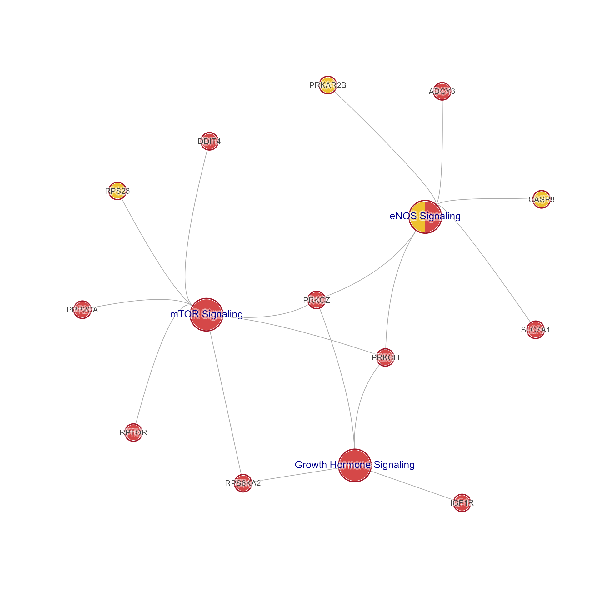

Convert MultiEnrichment incidence matrix to Cnet plot
Usage
mem2cnet(
memIM,
categoryShape = c("pie", "coloredrectangle", "circle", "ellipse"),
geneShape = c("pie", "coloredrectangle", "circle", "ellipse"),
forceColors = FALSE,
categoryColor = "#E5C494",
geneColor = "#B3B3B3",
categoryLabelColor = "darkblue",
geneLabelColor = "grey25",
categorySize = 12,
geneSize = 6,
categoryCex = 1,
geneCex = 0.8,
frame_darkFactor = NULL,
geneIM = NULL,
geneIMcolors = NULL,
geneIMdirection = NULL,
enrichIM = NULL,
enrichIMcolors = NULL,
enrichIMdirection = NULL,
coloredrect_nrow = 1,
coloredrect_ncol = NULL,
coloredrect_byrow = TRUE,
colorV = NULL,
direction_col_fn = NULL,
direction_cutoff = NULL,
direction_max = 2,
gene_direction_cutoff = 0,
gene_direction_max = 1.2,
gene_direction_col_fn = NULL,
hide_solo_pie = TRUE,
remove_blanks = TRUE,
remove_singlet_genes = TRUE,
do_reorder = TRUE,
spread_labels = FALSE,
vertex.label.font = 2,
use_shadowText = TRUE,
repulse = 3.5,
verbose = FALSE,
...
)
memIM2cnet(
memIM,
categoryShape = c("pie", "coloredrectangle", "circle", "ellipse"),
geneShape = c("pie", "coloredrectangle", "circle", "ellipse"),
forceColors = FALSE,
categoryColor = "#E5C494",
geneColor = "#B3B3B3",
categoryLabelColor = "darkblue",
geneLabelColor = "grey25",
categorySize = 12,
geneSize = 6,
categoryCex = 1,
geneCex = 0.8,
frame_darkFactor = NULL,
geneIM = NULL,
geneIMcolors = NULL,
geneIMdirection = NULL,
enrichIM = NULL,
enrichIMcolors = NULL,
enrichIMdirection = NULL,
coloredrect_nrow = 1,
coloredrect_ncol = NULL,
coloredrect_byrow = TRUE,
colorV = NULL,
direction_col_fn = NULL,
direction_cutoff = NULL,
direction_max = 2,
gene_direction_cutoff = 0,
gene_direction_max = 1.2,
gene_direction_col_fn = NULL,
hide_solo_pie = TRUE,
remove_blanks = TRUE,
remove_singlet_genes = TRUE,
do_reorder = TRUE,
spread_labels = FALSE,
vertex.label.font = 2,
use_shadowText = TRUE,
repulse = 3.5,
verbose = FALSE,
...
)Arguments
- memIM
one of the following:
MemS4 object, preferred. In this case, the arguments regarding 'geneIM' and 'enrichIM' data are taken directly from 'mem'.legacy
listmem object, for backward compatibility,numericmatrix in the form of amemIMgene-pathway incidence matrix. In this case, other arguments involvinggeneIMandenrichIMmatrices are required for correct behavior of this function. Whenmemformat is supplied, relevant arguments which are empty will use corresponding data frommem, for examplegeneIM,geneIMcolors,enrichIM,enrichIMcolors.
- categoryShape, geneShape
characterstring with node shape, default 'pie' uses pie nodes. Note that 'pie' shapes with only one segment are converted to 'circle' for convenience. When usingjam_igraph()to plot, it already treats single-segment pie nodes as circle anyway, and vectorizes pie node plotting to make the overall rendering time substantially faster.- forceColors
logicaldefault FALSE, whether to force node colors to usecategoryColorandgeneColorarguments, otherwise colors are defined usingenrichIMcolors()andgeneIMcolors(), respectively. Enabling this option will skip all pie and directional styling.- categoryColor, geneColor
characterR color for default node colors, used whengeneIMcolors,enrichIMcolorsis not supplied, respectively.- categoryLabelColor, geneLabelColor
characterR color used as default node label color.- categorySize, geneSize
numericdefault node size.- categoryCex, geneCex
numericadjustment to default node label font size.- frame_darkFactor
numericpassed tojamba::makeColorDarker()so the frame color is slightly darker than the node fill color.- geneIM, geneIMcolors, geneIMdirection, enrichIM, enrichIMcolors, enrichIMdirection
matrixdata used only when the input 'mem' is not anMemor legacylistmem object which already contains these data. When input 'mem' is supplied as amatrix, these value enable this function to operate on nearly any custom data.geneIMcolorsis used to define gene (row) node colorsenrichIMcolorsis used to define set (column) node colorsgeneIMdirection,enrichIMdirectionis used to define optional border colors defined by the direction, where -1 is down, 0 is no change, and +1 is up. Usedirection_col_fnto define a custom color function, however the default uses the reversed "RdBu" Brewer color ramp with blue (down), white (no change) and red (up).
- coloredrect_nrow, coloredrect_ncol, coloredrect_byrow
arguments used when
geneShape="coloredrectangle", to define layout and placement of colors across columns ingeneIMcolors. By default, one row of colors is used.- colorV
characteroptional vector of R colors, taken from 'mem' forMemor legacylistmem objects. When supplied, it should be a vector named to matchcolnames(enrichIM). When defined, these colors overrideenrichIMcolors.- direction_col_fn
functionused to colorize 'Set' node borders via enrichIMdirection. The default usescolorjam::col_div_xf()which applies reverse Brewer "RdBu" for blue (down), white (no change), and red (up) with maximum color at2.0. When not supplied,direction_cutoffanddirection_maxare used withcolorjam::col_div_xf().- direction_cutoff
numericdefault is taken frommemIMwhen provided asMem, typical default is1.0to require directional z-score at least1.0in order to apply any directional border color.- direction_max
numericdefault 2, the numeric value to apply maximum color from the color gradient function.- gene_direction_cutoff
numericdefault 0, the minimum value in geneIMdirection to apply up/down color. Using 0 will colorize any non-zero color.- gene_direction_max
numericdefault 1.2, the numeric value to apply maximum color from the color gradient function. Typical values are-1and1, so using1.2will apply nearly the maximum color.- gene_direction_col_fn
functionused to colorize 'Gene' node borders via enrichIMdirection. The default usescolorjam::col_div_xf()which applies reverse Brewer "RdBu" for blue (down), white (no change), and red (up) with maximum color at1.2. *When not supplied,gene_direction_cutoffandgene_direction_maxare used withcolorjam::col_div_xf().- hide_solo_pie
logicaldefault TRUE, passed toapply_cnet_direction()to determine whether to display border only as one outer frame color when all colors are identical. When FALSE, all pie wedges are individually colored.- remove_blanks
logicaldefault TRUE, whether to remove blank color subsections from each node, usingremoveIgraphBlanks(). This argument is useful for 'pie', 'jampie', or 'coloredrectangle' node shapes, so they will only indicate the relevant color.- remove_singlet_genes
logicaldefault TRUE, whether to remove singlet genes, which are genes (rows) not represented in any pathway gene sets (columns).- do_reorder
logicaldefault TRUE used to re-order nodes in "equivalent positions" by border color, color, etc. by callingreorder_igraph_nodes(). Equivalent nodes are common in Cnet (bipartite) networks, for example numerous 'Gene' nodes may be connected to the same 2 pathway 'Set' nodes, and therefore the node positions are interchangeable. Sorting by node attributes (notably color, then alphabetically by label) helps visual review.- spread_labels
logicaldefault FALSE, whether to spread node labels away from incoming edges, also adding label distance via vertex attribute 'label.dist'. This step callsspread_igraph_labels(), and can be customized further by passing arguments through '...' ellipses.- vertex.label.font
integerdefault 2, used to set default font to use bold face (font=2) for labels. Use 1 for normal font.- use_shadowText
logicaldefault TRUE, applied to graph attributes to apply shadowText by default when plotting withjam_igraph().- repulse
numericvalue passed tolayout_with_qfr()when eitherdo_reorderorspread_labelsis TRUE. Otherwise there is no layout applied. The 'repulse' value effectively defines node spacing, usually with values between 3 and 4, which 3 giving broad spacing, and 4 giving very close spacing of nodes in equivalent network positions, and broad spacing otherwise. Higher values tend to "clump" nodes closer together.- verbose
logicalindicating whether to print verbose output.- ...
additional arguments are passed to downstream functions:
when
remove_blanks=TRUEit is passed toremoveIgraphBlanks()when
spread_labels=TRUEit is passed tospread_igraph_labels()
Value
igraph object with Concept network data, containing
pathways connected to genes. Each node has attribute "nodeType"
of either "Set" or "Gene".
Details
This function takes Mem S4 object, or legacy list mem data,
or even bare matrix data, and produces a Concept network (Cnet)
in the form of an igraph object.
Cnet network data are a form of bipartite graph,
where every node is either 'Gene' or 'Set', and where nodes
are only connected across 'Gene' <--> 'Set'.
See igraph::graph_from_biadjacency_matrix().
A Cnet plot has particularly useful characteristic that
Set (pathway) nodes tend to be connected to very many Gene nodes,
creating an imbalance which is useful when defining a visual layout.
A vertex attribute 'nodeType' stores the type of node: 'Gene' or 'Set'.
The memIM defines the network, and non-zero value constitutes
an edge (connection) between row (Gene) and column (Set).
Other data are associated with nodes when available.
geneIM,geneIMcolors,geneIMdirection: define 'Gene' node fill and border colors.enrichIM,enrichIMcolors,enrichIMdirection: define 'Set' node fill and border colors.
Everything else helps customize the output, and can be used as-is.
Generic Cnet
The memIM can be supplied as an matrix of integer values, with
no other data supplied, and this is sufficient to create a Cnet plot.
Therefore, any incidence matrix can be used to create a network.
If no other data are provided, nodes are colored by
categoryColor (Set) and geneColor (Gene), and shapes defined
by categoryShape and geneShape.
Be aware that remove_singlet_genes=TRUE default will hide
rows (Genes) which have no connection to any columns (Sets).
This default ensures that an incidence matrix can be subset
for columns (Sets) of interest without also filtering rows.
However, columns (Sets) are not removed, because they typically are
not empty in the most common workflows.
Singlet columns, Set nodes with no connected Gene nodes, can be
filtered by calling removeIgraphSinglets().
See also
Other jam Mem utilities:
Mem-class,
MemPlotFolio-class,
fixSetLabels(),
mem2emap()
Other jam igraph functions:
communities2nodegroups(),
drawEllipse(),
edge_bundle_bipartite(),
edge_bundle_nodegroups(),
fixSetLabels(),
flip_edges(),
get_bipartite_nodeset(),
highlight_edges_by_node(),
igraph2pieGraph(),
label_communities(),
mem2emap(),
nodegroups2communities(),
rectifyPiegraph(),
removeIgraphBlanks(),
subsetCnetIgraph(),
subset_igraph_components(),
sync_igraph_communities()
Examples
use_sets <- c("eNOS Signaling",
"Growth Hormone Signaling",
"mTOR Signaling")
jam_igraph(mem2cnet(Memtest[, use_sets, ]),
use_shadowText=TRUE)
